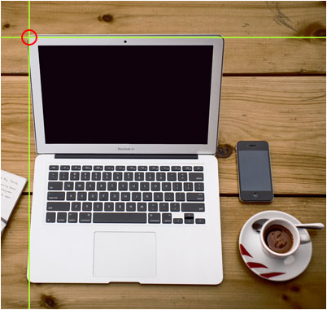
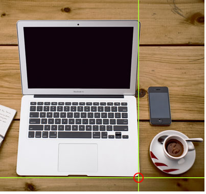
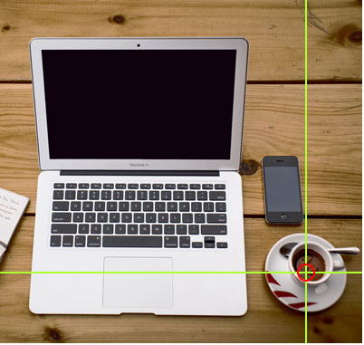
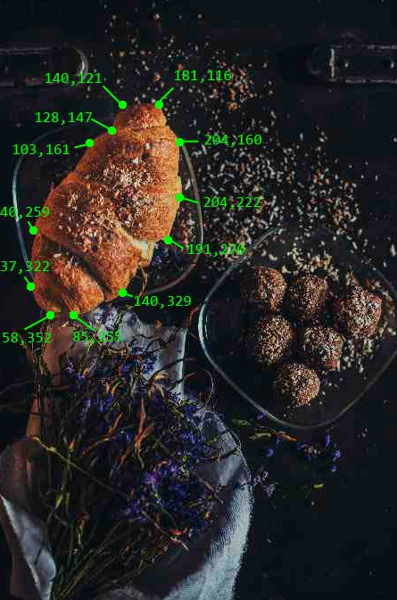

HTML 이미지 맵을 사용하면 이미지에서 클릭 가능한 영역을 만들 수 있다.
HTML <map> 태그는 이미지 맵을 정의한다. 이미지 맵은 클릭 가능한 영역이 있는 이미지이다.
<area> 태그로 정의된다.

<img src="image.jpg" alt="text" usemao="#workmap">>
<map name="workmap">
<area shape="shape" coords="number">
클릭 가능한 영역의 모양을 정의해야하며 다음 값 중 하나를 선택할 수 있다.
rect의 좌표는 쌍으로 되어있는데 하나는 x축 용이고 하나는 y축 용이다.
따라서 좌표 34,44는 왼쪽 여백에서 34픽셀, 상단에서 44픽셀에 위치한다.
좌표 270,350은 왼쪽 여백에서 270픽셀, 위쪽에서 350픽셀에 위치한다.
따라서 다음과 같은 범위가 <area shape="rect" coords="34, 44, 270, 350">이다.
원 영역을 추가하려면 먼저 원의 중심 좌표를 찾는다: 337,300
그 다음 원의 반지름을 지정한다: 44 pixels
따라서 다음과 같은 범위가 <area shape="circle" coords="337, 300, 44">이다.
직선으로 형성된 모양을 만드는 여러 좌표 점을 포함한다.
이것은 모든 모양을 만드는데 사용할 수 있다.
각각의 모든 x좌표와 y좌표를 조사하여 각 쌍에 대해 넣으면 된다
<area shape="poly" coords="140,121,181,116,204,160,204,222,191,270,140,329,85,355,58,352,37,322,40,259,103,161,128,147">
다음과 같은 범위가 지정이 된다.
클릭 가능한 영역은 JavaScript 기능을 트리거 할 수 있다.
JavaScript 함수를 실행하려면 <area>요소에 클릭 이벤트를 추가하면 된다.
| Tag | Description |
|---|---|
| <img> | image 정의 |
| <map> | image map 정의 |
| <area> | image map 내에서 클릭 가능한 영역을 정의 |
| <picture> | 여러 이미지 리소스에 대한 컨테이너를 정의 |